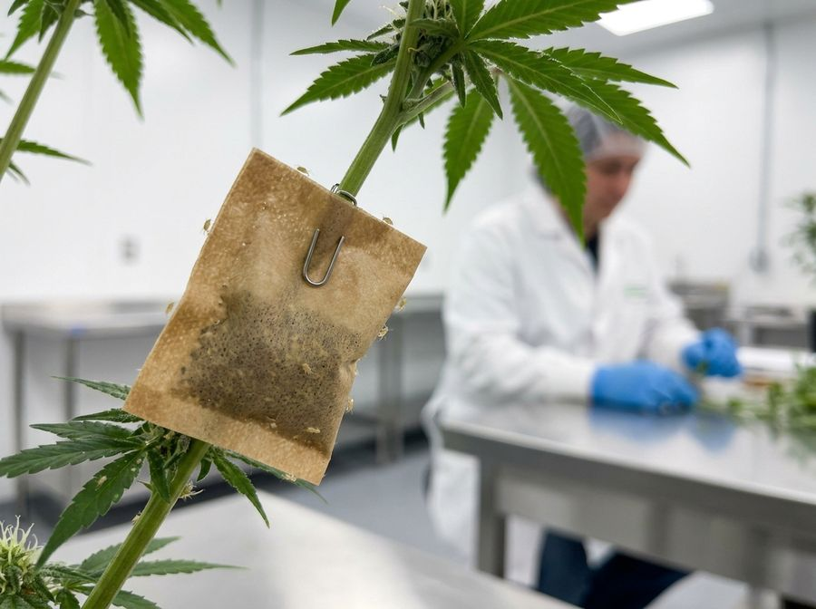
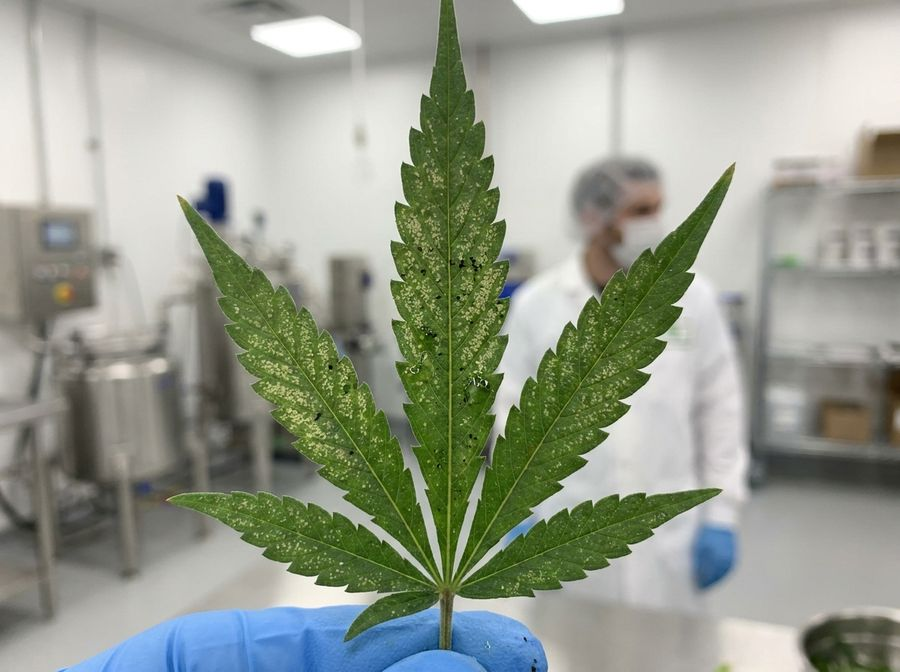

Pest identification and control
A beginner's field guide to the eight pests that hit cannabis hardest: how to spot each one, understand its life cycle, monitor for it, and knock it down with biological controls and targeted treatments. The companion to your IPM decision process.
What this guide is (and is not)
This is a plain-language field guide to identifying and controlling the eight pest groups that most commonly attack cannabis: spider mites, russet and broad mites, thrips, fungus gnats, aphids and root aphids, whitefly, and caterpillars. It tells you what each pest looks like, how fast it breeds, how to monitor for it, and how to treat it with bugs (biological controls) and sprays.
It is the ‘who’s who’ companion to the IPM SOP, which is the separate decision process that tells you when to act and which lever to pull. Read this guide to recognise the enemy. Read the IPM SOP to run the program.
- Covers 8 pest groups by name with tell-tale signs, life cycle, monitoring, biocontrol and treatment
- Beginner-first: every technical term is defined the first time it appears
- Pairs with the IPM SOP (the decision framework), this guide is the identification reference
- Bias is toward prevention and early detection, because every pest below breeds faster than you can spray
| Pest | Where it feeds | Tell-tale sign | Fastest cycle | Primary biocontrol |
|---|---|---|---|---|
| Spider mites | Leaf underside | Fine webbing + pale stippling (30x loupe) | ~3 days | Phytoseiulus persimilis |
| Russet/broad mites | Growing tips | Cupped, glossy, twisted new growth (needs 60-100x) | ~1 week | Amblyseius swirskii |
| Thrips | Leaf surface | Silvery streaks + black frass dots | ~1-2 weeks | Amblyseius cucumeris |
| Fungus gnats | Roots / wet media | Dark flies over the medium, larvae in soil | ~2-3 weeks | Steinernema feltiae |
| Aphids | New growth | Soft clusters, cast white skins, honeydew | ~1 week | Aphidius parasitoid wasps |
| Root aphids | Crown / roots | Yellowing with no visible canopy pest | ~1-2 weeks | Beneficial nematodes |
| Whitefly | Leaf underside | Clouds of white flies when disturbed | ~2-3 weeks | Encarsia / Eretmocerus |
| Caterpillars | Flowers / buds | Frass + bore holes, triggers bud rot | ~2-3 weeks | Bacillus thuringiensis (Btk) |
Key terms, defined once
A handful of words appear throughout this guide and the IPM SOP, so define them now. You do not need to memorise them, each one comes back in context.


Leaf sap-suckers: spider mites, thrips, aphids and whitefly
These four feed on leaves and stems by piercing cells and sucking sap, so they share a look: pale stippling, distortion and loss of vigour[2]. Telling them apart is about the secondary signs each one leaves.
- Spider mites: leaf-underside stippling plus fine webbing. The cycle runs as fast as 3 days at 27C / ~20% RH, and one female can lay up to ~200 eggs.
- Thrips: silvery rasping streaks plus tiny black frass dots. They drop to the medium to pupate, so leaf sprays alone miss a whole life stage.
- Aphids: soft-bodied clusters on new growth, cast white skins, honeydew that grows black sooty mould. They can give live birth, so buildup is explosive.
- Whitefly: tiny white moth-like adults that flush up in a cloud when disturbed, with uniform yellowing and lower-canopy decline.
Note that the aphid most associated with cannabis is its own species, the cannabis aphid (Phorodon cannabis), now recognised as a pest in North America[3]. The shared driver across all four is environment: warm plus dry shortens every life cycle, so climate control is the first lever, not the spray bottle.
Monitoring: traps, loupes and a weekly scouting routine
You cannot control what you do not measure, and early detection is the single biggest lever you have. Run a fixed weekly scouting walk on the same day, inspecting leaf undersides, growing tips, flowers and the root zone, and step up to twice weekly as rooms warm up.
Hang yellow sticky cards at canopy height for thrips, whitefly and fungus-gnat adults at roughly one card per 1,000 square feet as a minimum, with more cards giving a better signal. Place fungus-gnat cards low, near the medium surface, where the adults fly. Record the count on each card every week so you track the trend, not just the snapshot.
- Scout weekly on a fixed day, spot-check twice weekly when temperatures and pest development rise
- Yellow sticky cards: minimum ~1 per 1,000 sq ft, low at the medium for fungus gnats, canopy height for thrips/whitefly
- Log card counts each week, a rising trend (not a single number) is the alarm
- 30x loupe for spider mites, 60-100x scope for russet/broad mites, inspect undersides, tips, flowers AND roots
- Action thresholds are facility-specific, e.g. one grower tolerates 10-15 thrips/card/week, another with virus history tolerates under 5
Biological controls and treatments, pest by pest
Match the tool to the pest, and to whether you are preventing or reacting. For spider mites the specialist predator Phytoseiulus persimilis is the fast curative, but it wants humidity above ~60% RH, while Neoseiulus californicus or Amblyseius swirskii establish preventatively. Thrips are managed with Amblyseius cucumeris or swirskii at about 100-300 mites per square metre, with control typically visible around 3 weeks[5].
Aphids respond to species-matched parasitoid wasps (Aphidius colemani for green peach aphid, Aphidius matricariae for cannabis aphid) plus the insect-killing fungus Beauveria bassiana. Whitefly are hit with Encarsia or Eretmocerus wasps and swirskii. Fungus gnats are drenched in the medium with Steinernema feltiae nematodes and the bacterium Bti every ~2 weeks. Caterpillars are killed with Bacillus thuringiensis kurstaki (Btk), which only kills larvae that eat it. Several of these biopesticides have been tested directly on cannabis pests[8].
Russet and broad mites respond to predatory mites plus micronised sulphur, but never apply sulphur during flowering. It risks residue, taint and phytotoxicity on the buds.
| Pest | Preventative | Curative | Microbial / spray | Key constraint |
|---|---|---|---|---|
| Spider mites | N. californicus / swirskii | P. persimilis | Insecticidal soap, oils | Persimilis needs >60% RH |
| Russet/broad mites | A. swirskii | Predatory mites | Micronised sulphur | No sulphur in flower |
| Thrips | cucumeris / swirskii (100-300/m2) | Soil predators for pupae | Beauveria bassiana | Hit canopy AND medium |
| Fungus gnats | S. feltiae nematodes | Bti drench (every ~2 wk) | Bti / Gnatrol | Treat the wet medium |
| Aphids | Aphidius wasps | Match wasp to species | Beauveria bassiana | colemani vs matricariae |
| Root aphids | Beneficial nematodes | Soil drench | Beauveria bassiana | Below-ground, drench roots |
| Whitefly | Encarsia / Eretmocerus | Add swirskii | Insecticidal soap | Persistent, stay ahead |
| Caterpillars | Scout + Btk early | Btk spray | Bacillus thuringiensis (Btk) | Larva must ingest it |
Troubleshooting and common pitfalls
Most pest disasters are diagnosis and timing failures, not product failures. The classic mistakes repeat across facilities, and all of them are avoidable with a scope and a calendar.
| Symptom | Likely cause | Confirm / fix |
|---|---|---|
| Twisted, glossy new growth | Russet or broad mites (not nutrients) | Confirm at 60-100x before changing the feed |
| Thrips/gnats rebound after spraying | Soil-dwelling pupae/larvae untouched | Treat the medium AND the canopy, not just leaves |
| Beneficials released, pest still wins | Released too late onto an exploding population | Establish preventatively, predators cannot catch up to a spike |
| Persimilis dies off, mites persist | Room below ~60% RH, wrong for the agent | Raise RH or pick a drier-tolerant predator |
| Residue / taint at harvest | Sulphur or harsh oils used in flower | Stop sulphur and harsh oils before bloom |
| New crop infested from day one | Skipped clone/mother quarantine | Isolate and inspect every incoming plant |
Re-confirm the pest ID, check you covered every life stage (soil included), and verify the environment actually suited the agent. Most ‘failed’ biocontrol is one of those three.
Realistic expectations and prevention payoff
Eradication is rarely the goal. Durable suppression below the action threshold is. Expect biological control to take time: thrips control is often visible only around 3 weeks after release, and breaking a fungus-gnat cycle by trapping adults while killing larvae usually takes 4-8 weeks[7].
The cheapest ‘treatment’ is prevention. Quarantine and inspect every incoming clone, keep mother plants clean (an infested mother makes every cutting infested), control humidity and airflow, sanitise tools and rooms, and run the weekly scout without fail. A facility that prevents and detects early spends far less on curatives and loses far less crop than one that fights outbreaks reactively.
- The goal is suppression below threshold, not zero pests. Clean crops come from prevention, not heroic sprays.
- Biologicals are slow but durable: thrips ~3 weeks to visible control, fungus-gnat cycle ~4-8 weeks to break.
- Prevention stack: quarantine clones, keep mothers clean, control RH and airflow, sanitise, scout weekly.
- An infested mother plant guarantees infested clones. The mother room is your most important inspection point.
Track your outcomes against the thresholds in the IPM SOP so you know whether the program is actually holding, and keep the room itself working for you with good airflow design that denies pests the warm, still, humid pockets they love.
References
- Ahmed, M. Z., McKenzie, C. L., & Osborne, L. S. (2024). Arthropod and mollusk pests of hemp, Cannabis sativa (Rosales: Cannabaceae), and their indoor management plan in Florida. Journal of Integrated Pest Management, 15(1), 1. https://doi.org/10.1093/jipm/pmad028
- Pulkoski, M. A., & Burrack, H. J. (2023). Assessing the impact of piercing-sucking pests on greenhouse-grown industrial hemp (Cannabis sativa L.). Environmental Entomology, 53(1), 1-10. https://doi.org/10.1093/ee/nvad044
- Cranshaw, W., Halbert, S. E., Favret, C., Britt, K., & Miller, G. L. (2018). Phorodon cannabis Passerini (Hemiptera: Aphididae), a newly recognized pest in North America found on industrial hemp. Insecta Mundi, 0662, 1-12. https://digitalcommons.unl.edu/insectamundi/1162/
- Cranshaw, W., & Wainwright-Evans, S. (2020). Cannabis sativa as a host of rice root aphid (Hemiptera: Aphididae) in North America. Journal of Integrated Pest Management, 11(1), 15. https://doi.org/10.1093/jipm/pmaa008
- Lopez, L. (2023). Meet Amblyseius swirskii (Acari: Phytoseiidae): a commonly used predatory mite in vegetable crops. Journal of Integrated Pest Management, 14(1), 20. https://doi.org/10.1093/jipm/pmad018
- van Maanen, R., Vila, E., Sabelis, M. W., & Janssen, A. (2010). Biological control of broad mites (Polyphagotarsonemus latus) with the generalist predator Amblyseius swirskii. Experimental and Applied Acarology, 52(1), 29-34. https://doi.org/10.1007/s10493-010-9343-2
- Cloyd, R. A. (2015). Ecology of fungus gnats (Bradysia spp.) in greenhouse production systems associated with disease-interactions and alternative management strategies. Insects, 6(2), 325-332. https://doi.org/10.3390/insects6020325
- Effects of Selected Biopesticides on Two Arthropod Pests of Cannabis sativa L. in Northeastern Oregon. (2024). Crops, 4(4), 19. https://doi.org/10.3390/crops4040019
Citations marked in-text as [n] map to this list. Peer-reviewed sources except where noted. Cannabis tissue culture is strongly genotype-dependent, verify dilutions, hormone doses and local regulations against the primary sources before relying on them.